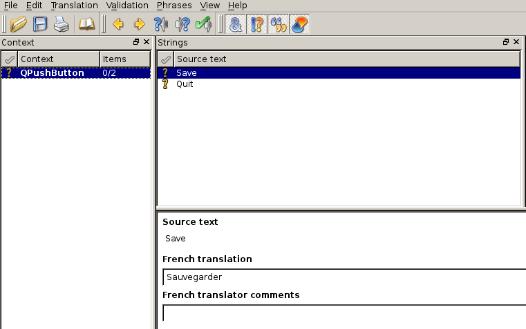

QT (1)

- 1995
- multiplateforme
- libre depuis QT4
- widgets graphiques, signaux/slots, macros, patterns, ...
main
#include <QApplication>
#include <QTextEdit>
int main( int argc, char** argv )
{
QApplication app( argv, argc );
QPushButton button;
button.setText( "Quit" );
button.setToolTip( "Quit tooltip" );
button.show();
return app.exec();
}
slot/signal : utilisation
QObject::connect( button, SIGNAL( clicked() ), app, SLOT( quit() ) );
slot/signal : déclaration dans le header
class CustomButton : public QPushButton
{
Q_OBJECT
public:
CustomButton();
~CustomButton();
signal:
void onQuitDone();
private slots:
void onQuit();
}
translate - TS file
<?xml version="1.0" encoding="utf-8"?>
<!DOCTYPE TS>
<TS version="2.0" language="fr_FR">
<context>
<name>QPushButton</name>
<message>
<source>Save</source>
<translation>Sauvegarder</translation>
</message>
</context>
</TS>
translate - linguist
translate - QTranslator
QApplication app( argc, argv );
QTranslator translator;
translator.load(qm_file);
app.installTranslator( &translator );
QPushButton button( QObject::tr( "Hello world!" ) );
CMake - détection de QT
FIND_PACKAGE(Qt4 REQUIRED)
CMake - link
INCLUDE(${QT_USE_FILE})
ADD_DEFINITIONS(${QT_DEFINITIONS})
TARGET_LINK_LIBRARIES(myexe ${QT_LIBRARIES})
CMake - moc
SET(MYLIB_HEADERS
${MYLIB_DIR}/file_qobject.h)
QT4_WRAP_CPP(MYLIB_MOC ${MYLIB_HEADERS})
ADD_EXECUTABLE(myexe ${SOURCES} ${MYLIB_MOC})
CMake - translation
MACRO(ADD_TRANSLATION_FILES _sources )
FOREACH (_current_FILE ${ARGN})
GET_FILENAME_COMPONENT(_in ${_current_FILE} ABSOLUTE)
GET_FILENAME_COMPONENT(_basename ${_current_FILE} NAME_WE)
SET(_out ${CMAKE_BINARY_DIR}${CMAKE_DATA_DIR}/i18n/${_basename}.qm)
ADD_CUSTOM_COMMAND(
OUTPUT ${_out}
COMMAND ${QT_LRELEASE_EXECUTABLE}
ARGS -verbose ${_in} -qm ${_out}
DEPENDS ${_in}
)
SET(${_sources} ${${_sources}} ${_out} )
ENDFOREACH (_current_FILE)
ENDMACRO(ADD_TRANSLATION_FILES)
# make sure the output directory exists
file(MAKE_DIRECTORY ${CMAKE_BINARY_DIR}${CMAKE_DATA_DIR}/i18n)
SET(TS_FILES texts_fr.ts texts_es.ts)
ADD_TRANSLATION_FILES (QM_FILES ${TS_FILES})
smart pointer - QScopedPointer
MyClass *myClass = new MyClass();
myClass->print();
delete myClass;
QScopedPointer< MyClass > myClass;
myClass.reset( new MyClass() );
myClass.data()->print();
EXERCICE 3